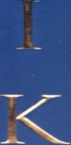

Güç
Sahibi
Olmanın
48
Yasası

ALTIN KİTAPLAR
/_
E
IOOST ELFFERS
6. BASIM
KiTABIN ORiJİNAL Ani YAYIN HALKLARI
THE 48 LAWS OF POWER
ROBERT GREENE ©
AKÇALI TELİF HAKLARI AJANSI ALTIN KİTAPLAR YAYINEVİ VE TİCARET A.Ş. ©
KAPAK
SELÇUK ÖZDOGAN
BASKI
6. BASIMI EYLÜL 2006 AKDENİZ YAYINCILIKA.Ş. Matbaacılar Sitesi No: 83 Bağcılar - İstanbul
BU KİTABIN HER TÜRLÜ YAYIN HAKLARI FİKİR VE SANAT ESERLERİ YASASI GEREĞİNCE ALTIN KİTAPLAR YAYINEVİ VE TİCARET A.Ş.'YE AİTTİR.
ISBN 975 - 21 - 0083 - X
ALTIN KİTAPLAR YAYINEVİ Celal Ferdi Gökçay Sk. Nebioğlu İşhanı Cağaloğlu - İstanbul
Tel: 0.212.513 63 65 / 526 80 12
0.212.520 62 46 / 513 65 18
Faks: 0.212.526 80 11
http://www.altinkitaplar.com.tr
ROBERT GREENE
İKTİDAR
Güç Sahibi Olmanın 48 Yasası
TÜRKÇESİ
ZELİHA İYİDOĞAN BABAYİĞİT
İçindekiler
ONSOZ
İnsanlar ve olaylar üzerinde hiçbir gücümüzün olmaması dayanılmaz bir duygudur; çaresiz kaldığımızda kendimizi çok kötü hissederiz. Kimse daha az güç istemez; herkes fazlasını ister. Bununla birlikte, bugünün dünyasında güce aç görünmek, gücü ele geçirmede açıkça davranmak tehlikelidir. Adil ve namuslu görünmemiz gerekir. Dolayısıyla ustalıklı davranmalı, doğal ve demokratik ama kurnaz ve çapraşık olmalıyız.
Bu sürekli ikiyüzlülük oyunu eski saray aristokrasisinin entrikalı dünyasında varolan güç dinamiğine çok benzer. Tarih boyunca saray kral, kraliçe, imparator, lider gibi gücü elinde tutan kişilerin çevresinde oluşmuştur. Saray mensupları özellikle hassas bir konumdaydılar: Efendilerine hizmet etmek zorundaydılar, fakat yaltaklanıyor görünseler ve çok açık bir biçimde yaranmaya çalışsalar etraflarındaki diğer saray mensupları bunu farkedip onlara karşı harekete geçebilirdi. O halde efendinin gözüne girmek gizlice olmalıydı. Ve böylesi bir gizliliği başarabilen becerikli saray mensupları bile, her an için onları altetme-ye çalışan diğer saray mensuplarına karşı kendilerini korumak zorundaydılar.
Bu arada saray uygarlığın ve zarafetin en yüksek noktasını temsil etmeliydi. Şiddet ve açık güç mücadeleleri uygun görülmezdi; saray halkı gücü kullananlara karşı sessizce ve gizlice çalışırdı. Bu sarayın ikilemiydi: Bir yandan kusursuz bir zarafet örneği sergilerken bir yandan da rakiplerini en gizli şekillerde altetmek ve onlara engel olmak zorundaydılar. Başarılı bir saray mensubu zaman içinde bütün hamlelerini dolaylı yollardan yapmayı öğrenirdi; eğer rakibini sırtından bıçaklarsa bu elinde kadife bir eldiven ve yüzünde gülümsemeyle olurdu. Mükemmel bir saray mensubu, baskı veya kuşku götürmez bir kalleşlik yerine, ayartma, cazibe, aldatma gibi kurnaz stratejiler kullanarak ve her zaman birkaç hamleyi öncesinden planlayarak istediğini elde ederdi. Saraydaki hayat sürekli uyanıklık ve taktiğe yönelik düşünme gerektiren sonu gelmeyen bir oyundu. Uygar savaştı bu.
Bugün de saray mensubununkine benzer garip bir ikilemle karşı karşıyayız: Her şey uygar, görgülü, demokratik ve adil görünmeli. Ama eğer bu kurallara çok sıkı bağlı kalarak oynarsak, kurallara harfiyen uyarsak bu kadar aptal olmayanlar bizi ezer geçer. Büyük Rönesans diplomatı ve saray adamı Niccolo Machiavelli'nin yazdığı gibi: "Her zaman iyi olmaya çalışan biri, iyi olmayan çok sayıda insanın arasında bir yıkıntı olmaya mahkûmdur." Saray kendini zarafetin en yüksek noktası olarak hayal etmiştir, ama parlak yüzeyinin altında kaynayıp dumanı tüten karanlık duygular kazanı bulunmaktadır: açgözlülük, kıskançlık, şehvet, nefret. Günümüz dünyası kendini dürüstlüğün zirvesi olarak düşünmekteyse de, aynı çirkin duygular her zaman olduğu gibi içimizde kaynamaktadır. Oyun aynıdır. Dışardan güzelliklere saygı gösterir gibi görünmelisiniz, ama içerden, eğer aptal değilseniz, açık gözlü davranmayı ve Napoleon’un tavsiye ettiği gibi hareket etmeyi çabucak öğrenirsiniz: Demirden elinize kadife eldiven giyin. Eğer eski zamanlardaki saray halkı gibi, baştan çıkarmayı, cazibeyi kullanmayı, aldatmayı ve hasımlarınızı kurnaz bir şekilde atlatmayı öğrenerek dolaylı yollardan davranma sanatında usta olabilirseniz gücün doruklarına ulaşırsınız. Ne yapmış olduğunuzu farketmemiş olan insanları iradenize boyun eğdirebilirsiniz. Eğer ne yaptığınızı farketmemişler-
se size ne kızarlar, ne de direnirler.
Saraylar hiç kuşkusuz nezaket ve terbiyenin egemen olduğu yerlerdir; böyle olmasaydı adam öldürülen harabeler olurlardı. Şimdi gülümseyip birbirlerini kucaklayanlar, eğer terbiyeleri araya girmeseydi, birbirlerine hakaret edip bıçak/arlardı.
Lord Chesterfield, 1694-1773
Bilinçli olarak oynanan güç oyunları kavramı, ne kadar dolaylı olursa olsun, bazı insanlar tarafından kötü, toplumdışı, geçmişin bir kalıntısı olarak görülür. Güçle ilgisi olmayan davranışlarda bulunarak oyuna karışmayabileceklerine inanırlar. Böyle insanlara dikkat etmelisiniz, çünkü dışarıya bu tür görüşler dile getirirlerken çoğu kez güç konusundaki en becerikli oyuncular onlardır. jşin içindeki dalaverayı zekice gizleyecek stratejiler kullanırlar. Bu tipler, örneğin, zayıflıklarını ve güç eksikliklerini bir tür ahlaki erdem olarak gösterirler. Ama gerçek güçsüzlük, herhangi bir kişisel çıkar sözkonusu değilse, anlayış veya saygı elde etmek için zayıflığını ortaya dökmez. jnsanın güçsüzlüğüyle gösteriş yapması, aslında güç oyununda çok etkin bir strateji, ustaca bir aldatmacadır (bkz. Yasa 22, Teslim Olma Taktiği).
Sözde oyuncu olmayanın kullandığı bir diğer strateji hayatın her alanında eşitlik talep etmesidir. Konum ve güçleri ne olursa olsun herkese eşit davranılmalıdır. Ancak gücün kötü etkisinden kaçınmak için herkese eşit ve adil davranmaya kalkarsanız, bazı insanların bazı şeyleri diğerlerinden daha iyi yapmaları sorunuyla karşılaşırsınız. Herkese eşit davranmak farklara aldırmamak, daha az becerikliyi yükseltmek ve üstün olanları bastırmak anlamına gelir. Bu şekilde davrananlarım çoğu gerçekte başka bir güç stratejisini uygulamakta, insanların ödüllerini kendi karar verdikleri şekillerde yeniden dağıtmaktadırlar.
Kuzuların yırtıcı kuşlardan hoşlanmamalarının garip bir yanı yoktur; ne var ki, bu, kuzuları kaçıran büyük yırtıcı kuşlara karşı olmak için bir neden oluşturmaz. Ve kuzular kendi aralarında fısıldaştıklarında, “Bu yırtıcı kuşlar kötü, o halde bu bize yırtıcı kuşların zıttı olan her şeyin iyi olduğunu söyleme hakkını vermez mi?“ derler. Böyle bir iddiada yapısal olarak yanlış bir şey yoktur, ama yırtıcı kuşlar biraz şaşkın bir şekilde bakarak şunları söyleyecek/erdir: “Bizim bu iyi kuzulara karşı söyleyecek bir sözümüz yok; aslında onları seviyoruz, hiçbir şeyin tadı yumuşak bir kuzununkine benzemez."
Friedrich Nietzsche, 1844-1900
Oyundan kaçınmanın bir diğer yolu da tam bir dürüstlük ve açıklık olabilir, çünkü güç arayanların kullandığı ana tekniklerden biri düzenbazlık ve gizliliktir. Ne var ki, dobra dobra olmak kaçınılmaz biçimde birçok insanı incitecek ve aşağılayacaktır; bu insanların bir bölümü karşılık olarak sizi yaralamayı seçecektir. Hiç kimse sizin dürüst ifadenizi tümüyle tarafsız ve kişisel çıkarlardan arınmış olarak görmeyecektir. Ve bunda haklıdırlar da. Aslında dürüstlüğün kullanımı gerçekte bir güç stratejisidir, insanları o kişinin soylu, iyi kalpli, bencil olmayan karakterine inandırmayı amaçlamaktadır. Bu bir tür ikna etme yöntemidir, hatta baskının gizli bir şeklidir.
Son olarak şunu söyleyebiliriz: Oyuncu olmadığını iddia edenler gücün peşinde oldukları suçlamasından kendilerini korumak için deneyimsiz, toy biriymiş gibi bir hava yaratabilirler. Yine dikkatli olun, çünkü safmış gibi görünmek etkili bir aldatma aracı olabilir (bkz. Yasa 21, Olduğunuzdan Daha Aptal Görünün). Gerçekten deneyimsiz biri bile gücün tuzağından kaçamaz. Çocuklar birçok açıdan saf olabilirler, ama çoğu kez etraflarındakiler üzerinde kontrol elde etmek için duydukları temel gereksinimle hareket ederler. Çocuklar yetişkinlerin dünyasında kendilerini güçsüz hissetmekten dolayı büyük ölçüde acı çekerler ve isteklerini yaptırmak için her türlü aracı kullanırlar. Gerçekten masum olan kişiler de güç için oynayabilirler ve çoğu kez bu oyunda son derece başarılıdırlar, çünkü ayıplanarak engellenmezler. Tekrar ediyoruz, masum görüntüsü verenler en az masum olanlardır.
Kişinin insanlarla ilgili amacını elde etmesinin tek yolu zor kullanma ve kurnazlıktır. Sevginin de işe yaradığını söylerler; ama bu, gün ışığını beklemek gibidir, oysa hayatın her ana ihtiyacı vardır. Johann von Goethe, 1749-1832
Bu sözümona oyuncu olmayanları, ahlaki özelliklerini, dindarlıklarını, mükemmel adalet duygularını sergilemelerinden anlayabilirsiniz. Ama hepimiz güce açlık duyduğumuz ve hemen hemen her hareketimiz güç kazanmaya yönelik olduğu için oyun oynamayanlar yalnızca gözümüze kum atmakta, ahlaki üstünlükleriyle dikkatimizi güç oyunlarından uzaklaştırmaktadırlar. Eğer onları yakından incelerseniz gerçekte dolaylı manevralarda en becerikli kişiler olduklarını görürsünüz.
Ve bu kişiler her gün kutlandıkları taktH-;lerin ortaya dökülmesine çok kızarlar.
Eğer dünya dev bir entrika sarayı ise ve biz de onun içinde kısılıp kalmışsak, oyundan vazgeçmenin bir yararı yoktur. Bu ancak-sizi güçsüz kılar ve güçsüzlük sizi perişan eder. Kaçınılmaza karşı mücadele etmek, tartışmak, sızlanmak ve suçluluk hissetmek yerine güçte üstün olmak çok daha iyidir. Aslında güçle ne kadar iyi başederseniz o kadar iyi bir arkadaş, sevgili, eş ve insan olursunuz. Mükemmel bir saray mensubunun rotasını izleyerek (bkz. Yasa 24) diğerlerinin kendileri hakkında daha iyi şeyler hissetmelerini sağlamayı, onlar için bir zevk kaynağı haline gelmeyi öğrenirsiniz. Sizin yeteneklerinize bağımlı hale gelir ve sizin varlığınızı ar/u öderler. Bu kitaptaki 48 yasayı iyice öğrenerek başkalarını güçlo beceriksizce uğraşmaktan, özelliklerini bilmeksizin ateşle oynamaktan doğan acıdan kurtarırsınız. Eğer güç oyunundan kaçılamıyorsu sanatkâr bir oyuncu olmak, inkarcı ve beceriksiz olmaktan daha iyidir.
Okçunun attığı bir ok tok bir kişiyi öldürebilir ya da öldürmeyebilir. Oysa zeki bir insen tarafından tasarlanan bir plan ana rahmindeki bebekler/ bile öldürebilir.
Kautllya, Hintli Filozof, M.Ö. 111. Yüzyıl
Güç oyununu öğrenmek dünyaya belirli tarzda bakmayı, bakış açısını değiştirmeyi gerektirir. Çaba ve yılların pratiğini gerektirir, çünkü oyunun çoğu doğal olarak gelmez. Belirli beceriler gerekir ve bu becerileri iyice öğrendikten sonra güç yasalarını daha kolay uygular hale gelirsiniz.
Bu beceriler içinde en önemlisi ve gücün yaşamsal temeli, duygularınıza hâkim olma yeteneğidir. Bir duruma karşı gösterilen duygusal tepki gücün karşısındaki en büyük tek engeldir, duygularınızı ifade ederek geçici olarak sağlayabileceğiniz tatminden çok daha fazlasına malolacak bir hatadır bu. Duygular mantığı gölgeler; eğer durumu açıkça göremezseniz o durum için hazırlanamaz ve kontrollu tepki veremezsiniz.
Öfke duygusal tepkiler içinde en yıkıcı olanıdır, çünkü görüşü en çok bu duygu kapatır. Ayrıca durumu kaçınılmaz olarak daha az kontrol edilebilir hale getiren ve düşmanınızın azmini güçlendiren bir etkisi vardır. Eğer sizi inciten bir düşmana zarar vermeye çalışıyorsanız, öfkenizi göstermek yerine dostluk gösterir gibi yaparak onu hazırlıksız yakalamak çok daha iyidir.
Sevgi ve şefkat de aynı ölçüde yıkıcıdır; öyle ki, güç oyunu oynadığından en az şüphelenoco(liniz kişilere hizmet eden çıkarlara karşı kör eder sizi. Öfke ya da scwqiyi bastıramazsınız ve bunları hissetmekten kaçamazsınız, zaten bunıı yapmaya da çalışmamalısınız. Fakat bunları nasıl ifade edeceğıni/ konusunda dikkatli olmalısınız ve daha da önemlisi, plan ya da stratojilorinizin hiçbir şekilde bu duygulardan etkilenmesine izin vermemelisiniz.
İnsanın bir diğerini kandırmak için zekâsını hangi araçlarla, hangi hilelerle, kaç çeşit sanatla, hangi endüstriyle keskinleştlrebl/eceğini ve bu çeşit/eme/erle dünyanın nasıl daha güzel bir hale gelebileceğini düşündüm.
Francesco Vettori, Machiavelli'nin Yaşıtı ve Arkadaşı,
XVI. Yüzyılın Başları
Duygularınıza hâkim olma ustalığı, şimdiki zamandan çıkıp geçmiş ve gelecek hakkında nesnel bir biçimde düşünme yeteneği gerektirir. Bütün kapıların ve girişlerin bekçisi olan iki suratlı Romalı Tanrı Janus gibi, bir kerede iki yöne de bakabilmelisiniz, nereden gelirse gelsin tehlikeyle en iyi başetmenin yolu budur. Kendiniz için böyle yüzler yaratmalısınız; biri sürekli olarak geleceğe, diğeri de geçmişe bakan iki yüz.
Geleceğin parolası, "Tetikte olunmayan gün yok," şeklindedir. Sorunları ortaya çıkmadan önce sürekli olarak hayal ettiğiniz için hiçbir şey sizi hazırlıksız yakalamayacaktır. Zamanınızı planlarınızın mutlu sonunu hayal etmekle geçirmek yerine, ortaya çıkabilecek her türlü olasılık ve tuzakları hesaplamayla uğraşmalısınız. Ne kadar uzağı görürseniz, o kadar güçlü hale gelirsiniz.
Janus’un diğer yüzü geçmişe bakar, ama geçmişin acılarını hatırlamak veya kin beslemek için değil. Böylesi yalnızca gücünüzü engeller. Oyunun yarısı, sizi yiyip bitiren ve mantığınızı örten bu olayları nasıl unutacağınızı öğrenmektir. Geriye doğru bakmanın gerçek amacı kendinizi sürekli olarak eğitmektir; geçmişe, sizden önce gelenlerden bir şeyler öğrenmek için bakarsınız. (Bu kitaptaki birçok örneğin bu süreçte büyük yardımı olacaktır.) Sonra, geçmişe dönerek kendi hareketlerinize ve arkadaşlarınızınkine daha yakından bakabilirsiniz. Bu sizin bir şeyler öğrenebileceğiniz en önemli okuldur, çünkü kişisel deneyimden kaynaklanmaktadır.
Prensipler yoktur; yalnızca olaylar vardır. İyi ve kötü yoktur, yalnızca şartlar vardır. Üstün insan onlara rehberlik etmek için olayları ve şartları benimser. Eğer prensipler ve sabit yasalar o/saydı, ülkeler onları bizim gömlek değiştirdiğimiz gibi değiştirmez/erdi ve bir insanın bütün bir ulustan daha akıllı olması beklenemez.
Honore de Balzac, 1799-1850
Geçmişte yaptığınız hataları incelemekle işe başlayın; sizi en ciddi biçimde gerileten hataları 48 güç yasası bağlamında analiz edin ve onlardan bir ders çıkarıp kendi kendinize şöyle söz verin: "Bu hataları bir daha asla tekrarlamayacağım; bir daha asla böyle bir tuzağa düşmeyeceğim." Eğer kendinizi bu şekilde değerlendirip gözlemleyebilirseniz, geçmişin kalıplarını yıkmayı başarabilir, böylece son derece değerli bir beceri edinirsiniz.
Güç görünüşlerle oynama yeteneği gerektirir. Bu amaçla birçok maske takmayı ve bir çanta dolusu aldatmaca taşımayı öğrenmelisiniz. Aldatma ve sahte davranış çirkin ya da ahlaksızca görülmemelidir. Bütün insan etkileşimi birçok düzeylerde aldatmayı gerektirir ve bir bakıma bizi hayvanlardan ayıran şey yalan söyleme ve aldatma yete-neğimizdir. Yunan mitolojisinde ve Hintlilerin Mahabharata döngüsünde, Ortadoğu’da Gılgamış destanında aldatma sanatını kullanmak tanrıların bir ayrıcalığıdır; örneğin, Odysseus'u kahraman yapan, tanrılarla eşit zekâ düzeyine ve aldatma sanatına sahip olması ve onlardan tanrısal güçlerinin bir kısmını çalarak tanrıların zanatına rakip olabileceğini gösteren yeteneğidir. Aldatma uygarlığın geliştirilmiş bir sanatıdır ve güç oyunundaki en güçlü silahtır.
Kendinize biraz uzaktan bakmazsanız, o günün ve o anın gerektirdiği maskeyi takarak birçok farklı insan gibi davranamazsanız, aldatmada başarılı olamazsınız. Bütün görünüşlere böyle esnek bir yaklaşımla, diğer insanlar gibi sizi de aşağı doğru çeken içsel ağırlığın büyük bölümünden kurtulursunuz. Yüzünüzü bir aktörünkü gibi şekillendirilebilir hale getirin, niyetlerinizi başkalarından gizlemek üzere çalışın, insanları tuzaklara çekme pratiği yapın. Görünüşle oynamak ve aldatma sanatında ustalaşmak hayatın estetik zevkleri arasındadır. Ayrıca gücün kazanılmasında da anahtarlardır.
Eğer aldatma sizin silah deponuzdaki en güçlü silahsa, bütün işlerdeki sabır da en önemli kalkanınızdır. Sabır sizin aptalca hatalar yapmanıza engel olacaktır. Duygularınıza hâkim olmanız gibi sabır da bir beceridir, doğal olarak gelmez. Ama zaten güç hakkındaki hiçbir şey doğal değildir; güç doğal dünyadaki her şeyden daha tanrısaldır. Ve sabır her şeyden bol zamanları otan tanrıların en üstün erdemidir. ¡yi şeyler olacaktır; çimenler yeniden büyüyecektir, tabii eğer yeterli
zamanı verir ve geleceğe doğru birkaç adımı önceden görürseniz. Öte yandan sabırsızlık yalnızca zayıf görünmenize neden olur. Güce giden yoldaki en büyük engeldir.
Güçte esas olarak doğru ya da yanlış kavramı yoktur ve onu kazanmadaki en önemli becerilerden biri, iyi ya da kötüden çok, şartları görebilme yeteneğidir. Güç bir oyundur ve oyunlarda rakiplerinizi niyetlerine göre değil, eylemlerinin etkilerine göre değerlendirirsiniz. Görebildiğiniz ve hissedebildiklerinizle stratejilerini ve güçlerini ölçersiniz. jnsanın niyetleri ne kadar sık olarak görüşü bulandırır ve aldatıcı olur! Eğer arkadaşınız ya da rakibiniz olan öteki oyuncunun hareketlerinin etkileri karışıklığa ve yıkıma yol açıyorsa, onun iyi niyetli olması ve kalbinde yalnızca sizin çıkarlarınızı taşıması ne fark eder? insanların hareketlerini her türlü haklı çıkarmalarla örtmeleri, her zaman iyilikle hareket ettiklerini varsaymaları son derece doğaldır. Bunu her duyduğunuzda içinizden gülmeyi; birisinin niyetlerini ve hareketlerini yalnızca gücün kazanımı için bir bahane olan ahlaki yargılarla ölçmeye kendinizi kaptırmamayı öğrenmelisiniz.
Bu bir oyun. Rakibiniz karşınızda oturuyor. Her ikiniz de oyunun kurallarına uyuyor ve hiçbir şeyi kişisel olarak almıyor, centilmen gibi davranıyorsunuz. Bir stratejiye göre oynuyorsunuz ve rakibinizin hareketlerini elinizden geldiğince sakin bir şekilde izliyorsunuz. Sonunda birlikte oynadığınız kişilerin nezaketlerini iyi ve hoş niyetlerinden daha çok takdir edeceksiniz. Gözlerinizi öteki oyuncuların hareketlerinin sonuçlarını, dış şartları takip etmek için eğitin ve başka hiçbir şeyin dikkatinizi dağıtmasına izin vermeyin.
Güç hâkimiyetinin yarısı yapmadığınız, kendinize kapılıp gitme izni vermediğiniz şeylerden gelir. Bu beceri için her şeyi size olan maliyetleriyle değerlendirmeyi öğrenmelisiniz. Nietzsche'nin yazdığı gibi: "Bir şeyin değeri bazen kişinin elde ettiği değil, onun için ödediği şeyde, yani maliyetinde yatmaktadır." Belki amacınıza ulaştınız ve bu değerli bir amaç, peki ya bedeli? Bu standardı her şeye uygulayın, diğer insanlarla birlikte çalışmak veya onların yardımına koşmak dahil. Sonuç olarak hayat çok kısa, fırsatlar çok az ve yararlanabileceğiniz kadar enerjiniz var ancak. Bu anlamda zaman da diğerleri kadar düşünülmesi gereken önemli bir kavram. Değerli zamanınızı ya da zihinsel huzurunuzu başkalarının işleriyle asla ziyan etmeyin; bu ödenmesi gereken çok yüksek bir bedeldir.
Güç toplumsal bir oyundur. Onu öğrenmek ve ustalaşmak için insanları inceleme ve anlama yeteneğini geliştirmelisiniz. On yedinci yüzyıl büyük düşünürü ve saray mensubu Baltasar Gracian’ın yazdığı gibi: "Birçok insan hayvanların ya da bitkilerin özelliklerini incelemek için zaman harcıyor; oysa birlikte yaşamak zorunda olduğumuz insan-larınkini incelemek ne kadar önemli olurdu!" Usta bir oyuncu olmak için usta bir psikolog olmanız da gerekir. jnsanları harekete geçiren güdüleri tanımalı ve davranışlarını kuşattıkları toz bulutunun arasından görebilmelisiniz. jnsanların gizli güdülerini anlamak gücün kazanımın-da sahip olabileceğiniz en önemli bilgidir. Aldatma, ayartma ve kullanmanın sonsuz olasılıklarını ortaya döker.
jnsanlar sınırsız karmaşıklığa sahiptir ve siz onları tam olarak anlayamadan seyrederek bir ömür geçirebilirsiniz. O halde eğitiminize şimdi başlamak çok daha önemlidir. Bunu yaparken bir ilkeyi de aklınızdan çıkarmamalısınız: jnsanlar arasında asla kimi incelediğinize ve kime güvendiğinize göre ayırım yapmayın. Kimseye tamamen güvenmeyin ve herkesi inceleyin, arkadaşlarınız ve sevdikleriniz dahil.
Son olarak, her zaman güce giden dolaylı rotayı seçmeyi de öğrenmelisiniz. Kurnazlığınızı gizleyin. Hedefine ulaşmadan önce birkaç vuruş yapıp puan kazandıran bilardo topu gibi sizin hareketleriniz de planlı olmalı ve en az belirgin olan şekilde geliştirilmelidir. Kendinizi dolaylı davranmak üzere eğitirseniz modern sarayda başarılı olabilir, insanları harika bir biçimde parmağınızın ucunda oynatırken, kusursuz bir nezaket örneği oluşturabilirsiniz.
Dolaylı davranma sanatında bir kılavuz kitap olan jktidar, Güç Sa -hibi Olmanın 48 Yasası'nı okuyun. Buradaki yasalar güç oyununu inceleyip bunda ustalaşan kadın ve erkeklerin yazılarına dayanmaktadır. Bu yazılar üç bin yıllık bir süreye yayılmıştır; eski Çin ve Rönesans İtalya'sı gibi birbirine hiç benzemeyen uygarlıklarda yazılmasına karşın, ortak fikir ve görüşleri içermektedir. Gücün 48 yasası, tarihteki en ünlü stratejistleri (Sun-tzu, Clausewitz), devlet adamları (Bismarck, Talleyrand), saray mensupları (Castiglione, Gracian), baştan çıkarıcılar (Ninon de Lenclos, Kazanova) ve üçkâğıtçıların ("Yelow Kid" Weil) yazılarından toplanan birikmiş bilgeliğin damıtımıdır.
Yasaların basit bir önermesi vardır: Belirli hareketler her zaman insanın gücünü arttırırken (yasaya uyma) diğerleri gücü azaltır, hatta bizi mahveder (yasayı çiğneme). Yasaya uymalar ve yasayı çiğnemeler tarihsel örneklerle açıklanmıştır. Bu yasalar kesindir ve zamanla sınırlı değildir.
Gücün 48 yasası çeşitli şekillerde kullanılabilir. Bu kitabı baştan sona okuyarak güç hakkındaki genel şeyleri öğrenebilirsiniz. Sözko-nusu yasalardan birkaçı hayatınızla doğrudan ilgili olmasa da zaman içinde hepsinin uygulanabilir ve aslında birbirleriyle ilişkili olduklarını göreceksiniz. Bütün konu hakkında bilgi edindiğinizde geçmiş hareketlerinizi en iyi biçimde değerlendirebilecek ve şimdiki işleriniz üzerinde daha büyük bir kontrola sahip olacaksınız. Kitabın baştan sona okunması düşünmeyi ve kitabı bitirdikten uzun bir süre sonra bile yeniden değerlendirmeyi ilham edecektir.
Kitap ayrıca gözden geçirip şu anda sizinle en çok ilgili yasaları bulmanızı sağlayacak şekilde düzenlenmiştir. Diyelim ki, patronunuzla bir sorununuz var ve çabalarınızın neden daha büyük bir minnettarlık ya da terfi getirmediğini anlayamıyorsunuz. Birkaç yasa özellikle ast-üst ilişkilerine yöneliktir ve siz kesinlikle bunlardan birini çiğniyorsunuz demektir. Bölüm başlarındaki yasaların özetlerini gözden geçirerek ilgili yasayı bulabilirsiniz.
Son olarak, kitap eğlence amacıyla şöyle bir okunabilir ve iktidardaki atalarımızın zaafları ve büyük işleri arasında eğlenceli bir yolculuk yapabilirsiniz. Ancak kitabı bu amaçla kullanacak olanlar için burada bir uyarı yapmamız gerekiyor: Güç kendi tarzı içinde bitmek bilmeksizin ayartıcı ve aldatıcıdır. Bir labirenttir; zihniniz onun sonsuz sayıdaki sorununu çözmekten yorgun düşer ve çok geçmeden ne kadar hoş bir şekilde kaybolduğunuzu farkedersiniz. Başka bir deyişle, ciddiye almakla en fazla eğlendirici hale gelir. Böylesine önemli bir konuyu hafife almayın. Güç tanrıları hafife almaya kızar; yalnızca inceleyen ve düşünenlere nihai tatmin verirken, iyi zaman geçirmek için yüzeyi tarayanları cezalandırırlar.
Her zaman iyi olmaya çalışan bir insan iyi olmayan çok sayıda insanın arasında bir yıkıntı haline gelecektir. Bu nedenle otorite kurmak isteyen bir prens nasıl iyi olunmayacağını öğrenmeli ve ihtiyaca bağlı olarak bu bilgiyi ya kullanmalı ya da onu kullanmaktan kaçınmalıdtr.
Prens, Niccolo Machiavelli, 1469-1527